Bài thực hành lập trình Android
Họ và tên: Trần Hải Đăng
Mã sinh viên: B24DCCC049
Lớp: ................................
github.com/tranthanhha666/B24DCCC049_TranHaiDang_QuanLyDanhBa
Ứng dụng được xây dựng bằng Java và XML, gồm LoginActivity, MainActivity, AddContactActivity và ContactDetailActivity. Các Activity chuyển màn hình bằng Intent. Báo cáo trình bày ảnh chạy thật, các thành phần đã thêm, xử lý sự kiện và kết quả kiểm thử.
Contact chứa ID, họ tên, số điện thoại, nhóm, giới tính, yêu thích và ghi chú. ContactRepository quản lý ArrayList<Contact>; ContactsApplication giữ một repository dùng chung trong tiến trình. Dữ liệu không ghi vào SQLite, Room, Firebase hoặc máy chủ. Khi tiến trình kết thúc, lần chạy mới khởi tạo lại ba liên hệ mẫu.
Ảnh minh chứng được chụp trên emulator Pixel 4a, Android 17/API 37. Giao diện có xử lý insets thanh hệ thống và bàn phím; biểu mẫu được giữ khi Activity tái tạo.
| Họ tên | Điện thoại | Nhóm | Yêu thích |
|---|---|---|---|
| Nguyễn Văn An | 0901234567 | Bạn bè | Không |
| Trần Thị Bình | 0912345678 | Gia đình | Có |
| Lê Minh Châu | 0987654321 | Công việc | Không |
Luồng chính: LoginActivity → MainActivity → AddContactActivity → MainActivity.
Nhấn liên hệ: MainActivity → ContactDetailActivity → MainActivity hoặc trình quay số.
activity_login.xml gồm EditText usernameInput, EditText passwordInput với inputType="textPassword", TextView loginError và Button loginButton. LoginValidator khai báo cố định USERNAME = "admin" và PASSWORD = "123456".
LoginActivity.attemptLogin() chặn tên đăng nhập hoặc mật khẩu rỗng bằng setError(). Sai tài khoản sẽ hiện “Sai tên đăng nhập hoặc mật khẩu” và giữ màn hình đăng nhập. Khi đúng, startActivity(new Intent(this, MainActivity.class)) mở danh sách; finish() đóng LoginActivity để Back không quay lại trang đăng nhập.
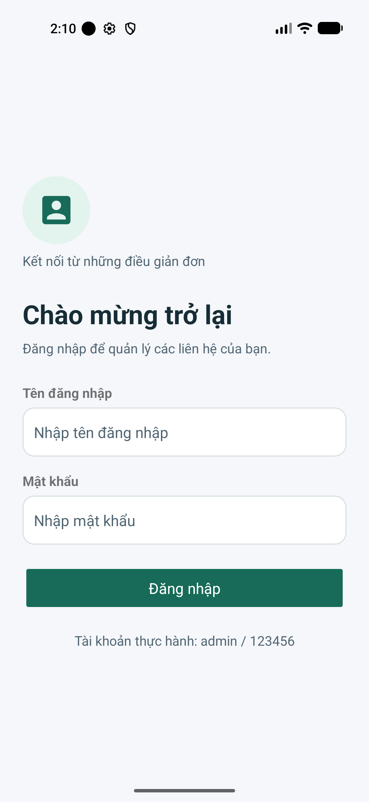
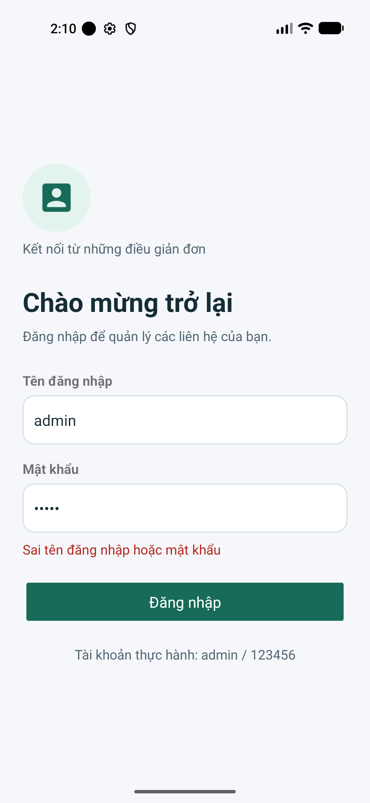
activity_main.xml sử dụng ListView contactList và ContactAdapter kế thừa BaseAdapter. item_contact.xml hiển thị chữ cái đầu của tên, họ tên, số điện thoại, nhóm và dấu sao khi Contact.isFavorite() bằng true. Adapter tái sử dụng View qua Holder và dùng ID ổn định cho từng liên hệ.
MainActivity.onResume() nạp lại danh sách và cập nhật totalCount, favoriteCount từ getTotalCount() và getFavoriteCount(). Nút Thêm liên hệ mở AddContactActivity bằng Intent; nhấn một dòng mở ContactDetailActivity và truyền EXTRA_CONTACT_ID bằng putExtra().
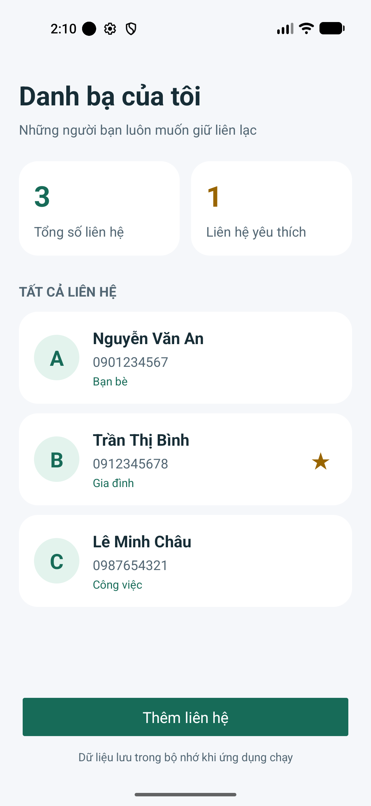
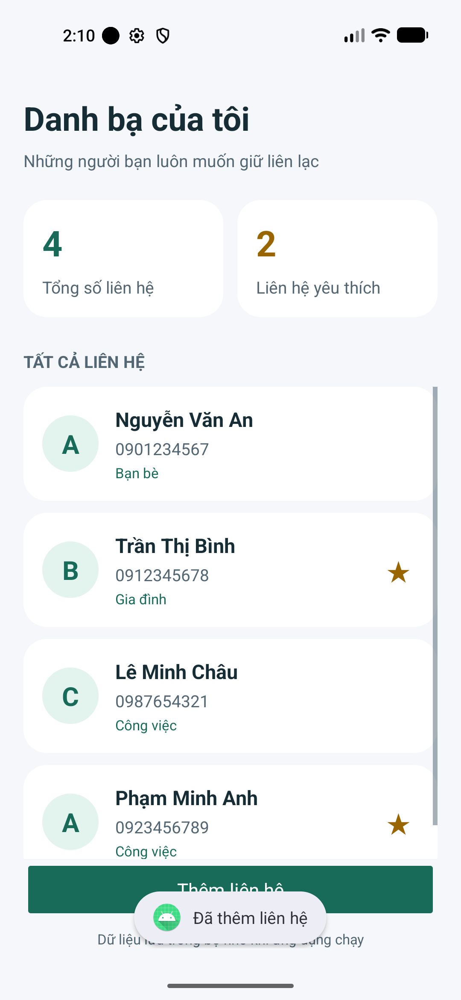
activity_add_contact.xml gồm EditText họ tên và điện thoại, Spinner nhóm, RadioGroup giới tính, CheckBox yêu thích, EditText ghi chú nhiều dòng và Button lưu. Spinner lấy bốn giá trị Gia đình, Bạn bè, Công việc, Khác từ contact_groups; RadioButton Nam được chọn mặc định.
AddContactActivity.saveContact() đọc và kiểm tra biểu mẫu, lấy giới tính từ RadioGroup, rồi gọi repository().add(...) để tạo Contact với đủ thuộc tính. Khi lưu thành công, Toast “Đã thêm liên hệ” xuất hiện và finish() quay về danh sách. ScrollView hỗ trợ cuộn khi cửa sổ thấp hoặc bàn phím đang mở.
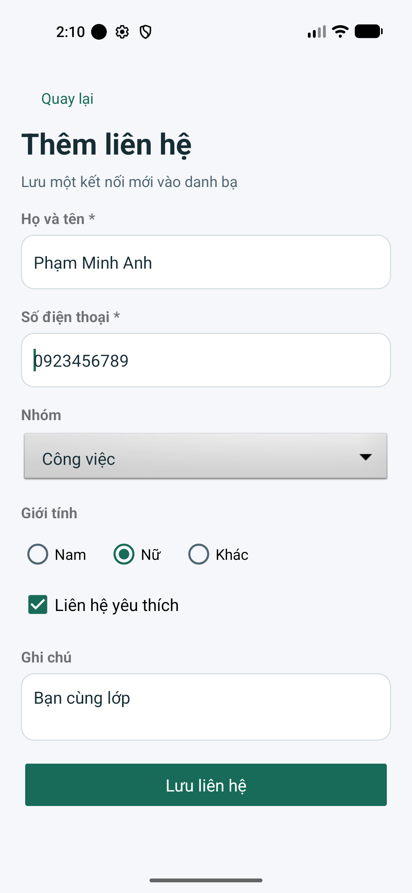
ContactValidator.isValidName() yêu cầu họ tên sau trim() không rỗng. isValidPhone() kiểm tra biểu thức 0[0-9]{9}: đúng 10 chữ số và bắt đầu bằng 0. inputType="phone" hỗ trợ bàn phím nhập số; kiểm tra trong Java quyết định dữ liệu có hợp lệ hay không.
ContactRepository.containsPhone() chặn số trùng trước khi lưu. Repository cũng tự kiểm tra đầu vào để bảo vệ ArrayList. Khi không hợp lệ, setError() báo lỗi và không thêm dữ liệu. BaseActivity.clearErrorWhenEdited() dùng TextWatcher để bỏ lỗi cũ khi người dùng sửa ô nhập.
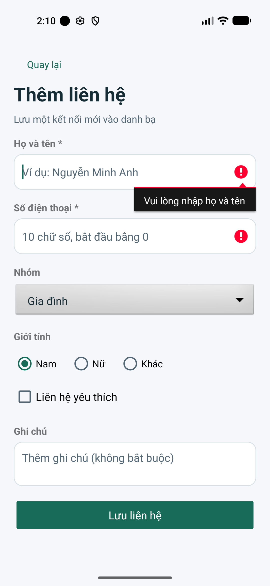
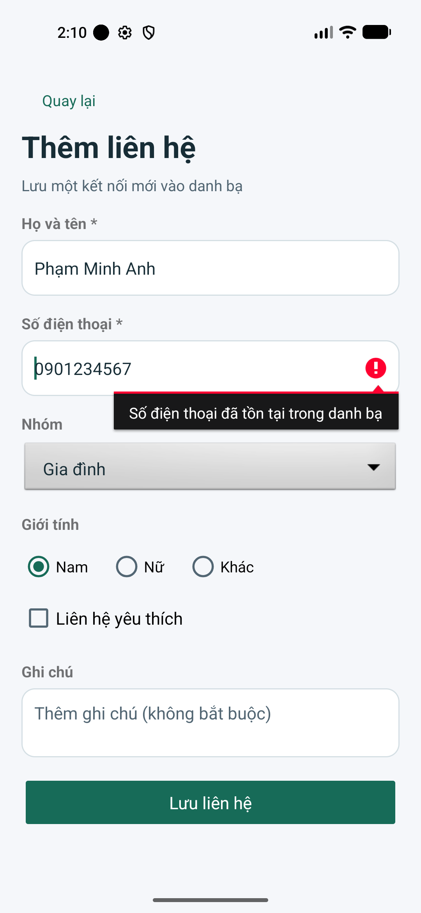
ContactDetailActivity nhận ID bằng getIntent().getLongExtra(EXTRA_CONTACT_ID, -1L), rồi findById() lấy liên hệ từ repository. Các TextView hiển thị chữ đại diện, họ tên, điện thoại, nhóm, giới tính và ghi chú; ghi chú rỗng hiện “Chưa có ghi chú”. ID không tồn tại được xử lý bằng Toast và finish(), tránh truy cập null.
CheckBox detailFavorite được gán từ Contact.isFavorite(). setOnCheckedChangeListener() gọi repository().setFavorite(contactId, checked). Nút Quay lại gọi finish(); Gọi điện và Xóa liên hệ lần lượt gọi dialContact() và confirmDelete().
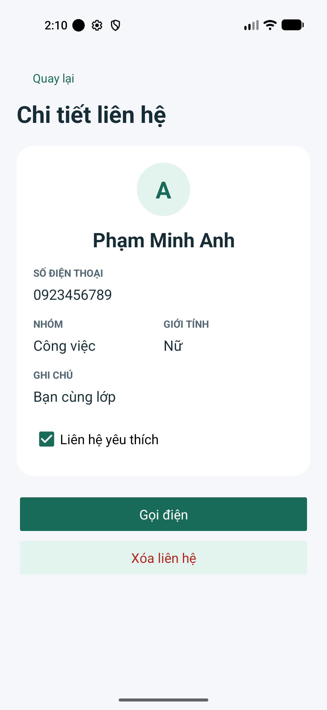
dialContact() tạo Intent.ACTION_DIAL với Uri.fromParts("tel", contact.getPhone(), null) để mở trình quay số và điền sẵn số. Ứng dụng không tự thực hiện cuộc gọi và không khai báo quyền CALL_PHONE. ActivityNotFoundException được bắt để báo thiết bị chưa có ứng dụng quay số.
confirmDelete() hiển thị AlertDialog có Hủy và Xóa. Hủy giữ nguyên dữ liệu; Xóa gọi repository().delete(contactId), hiện Toast rồi finish(). Ảnh quay số minh họa Nguyễn Văn An; ảnh xác nhận xóa minh họa Phạm Minh Anh.
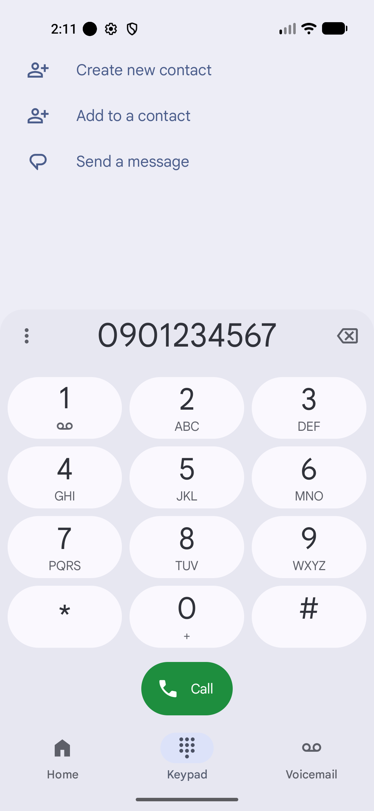
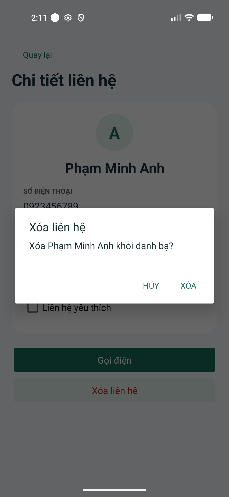
Sau khi bỏ chọn yêu thích của Phạm Minh Anh và quay lại, tổng số vẫn là 4, số yêu thích giảm từ 2 xuống 1. MainActivity.onResume() nạp lại dữ liệu cho Adapter nên dấu sao và hai số thống kê cùng thay đổi.
Sau khi xác nhận xóa Phạm Minh Anh, danh sách còn ba liên hệ mẫu và một yêu thích. ID của các liên hệ còn lại được giữ ổn định. Khi xóa hết dữ liệu, ListView chuyển sang emptyState với hướng dẫn thêm liên hệ.
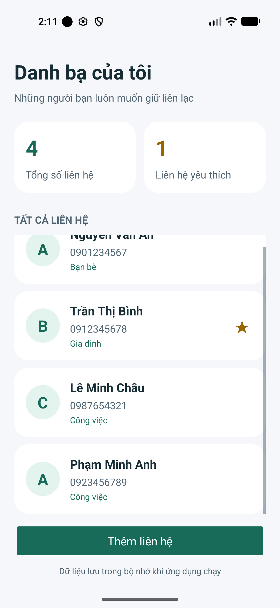
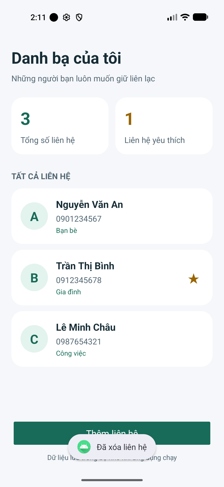
ContactRepositoryTest dùng JUnit để kiểm tra dữ liệu và quy tắc xử lý. ContactWorkflowTest dùng Espresso và ActivityScenario trên Pixel 4a, API 37. Các kiểm thử so sánh dữ liệu và giao diện, không chỉ mở màn hình.
| Nhóm kiểm tra | Nội dung | Kết quả |
|---|---|---|
| Unit test | Dữ liệu mẫu, tên/số, trùng số, thêm/xóa/yêu thích, ID, bản sao danh sách, chữ đại diện, tài khoản | 12/12 đạt |
| Luồng giao diện | Đăng nhập rỗng/sai/đúng; thêm rỗng/sai/trùng/đúng; chi tiết; yêu thích; hủy/xác nhận xóa; ACTION_DIAL | 1/1 đạt |
| Tái tạo Activity | Giữ tên, điện thoại, giới tính, yêu thích, ghi chú | 1/1 đạt |
| ID không tồn tại | Đóng chi tiết an toàn, không crash | 1/1 đạt |
| Danh sách rỗng | Hiện hướng dẫn và thống kê 0/0 | 1/1 đạt |
| Biên dịch APK | assembleDebug tạo app-debug.apk | Đạt |
| Android lint | lintDebug: 0 lỗi, 4 cảnh báo cấu hình/tài nguyên | Đạt |
Chạy dự án: clone repository, mở bằng Android Studio, cài SDK API 37 và đồng bộ Gradle. Dự án có Gradle Wrapper và JVM toolchain. Chọn emulator hoặc thiết bị Android API 24 trở lên, Run module app; đăng nhập bằng admin / 123456.
Lệnh kiểm tra: .\gradlew.bat :app:testDebugUnitTest :app:assembleDebug :app:lintDebug
Kiểm thử thiết bị: .\gradlew.bat :app:connectedDebugAndroidTest
Đã kiểm thử trên một emulator API 37; chưa xác nhận trên thiết bị vật lý hoặc mọi phiên bản Android hỗ trợ. Dữ liệu chỉ tồn tại trong tiến trình theo đề; tài khoản cố định dùng cho bài thực hành.
Mã nguồn, báo cáo và ảnh minh chứng được đưa lên Git; .gitignore loại build, .gradle, .idea và local.properties.